Character / PROJECT 17
Cosmic Astra
Cosmic Astra · 月灵兔
在当代都市文明的坚硬外壳下，灵魂对未知的向往，本质上是对情感寄托与精神自愈的渴求。
- ROLE
- 角色设定与视觉延展
- TIME
- 项目年份待确认
- TOOLS
- 设计工具清单未提供
- TYPE
- Visual design study
- STATUS
- Independent visual study
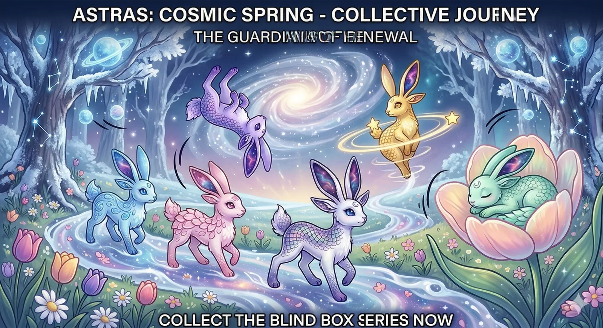
01 / ONE-LINE CONCEPT
One-line concept
在当代都市文明的坚硬外壳下，灵魂对未知的向往，本质上是对情感寄托与精神自愈的渴求。
02 / VISUAL SYSTEM
Visual system
- 世界观：超现实童话 · 星辰与情感深度融合的能量结晶
- 能力：吸收星尘并转化为情感自愈能量
- 视觉风格：波普幻觉主义 · 灵感源自 Keith Haring 粗黑线条 + Brian Froud 精灵眼神 + Mati Klarwein 超现实肌理
- 灵感来源：神秘 / 星空 / 玄学 / 塔罗
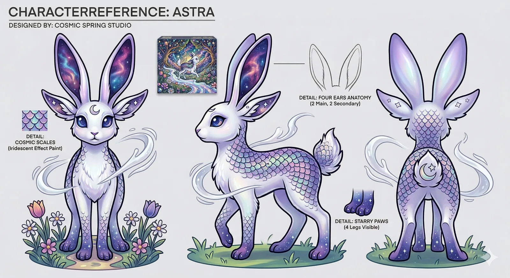
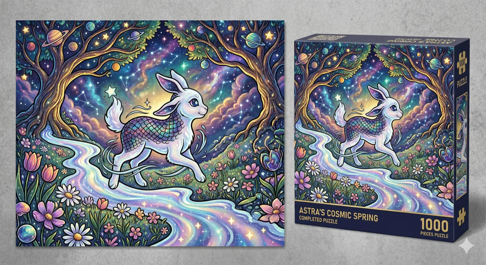
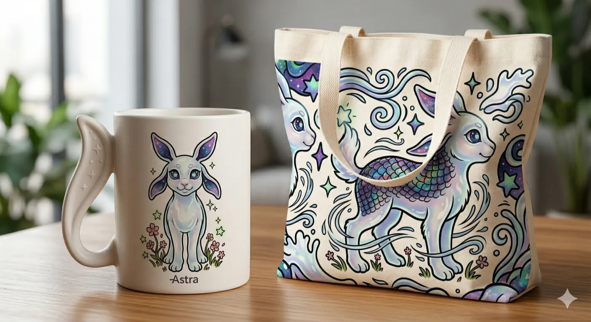
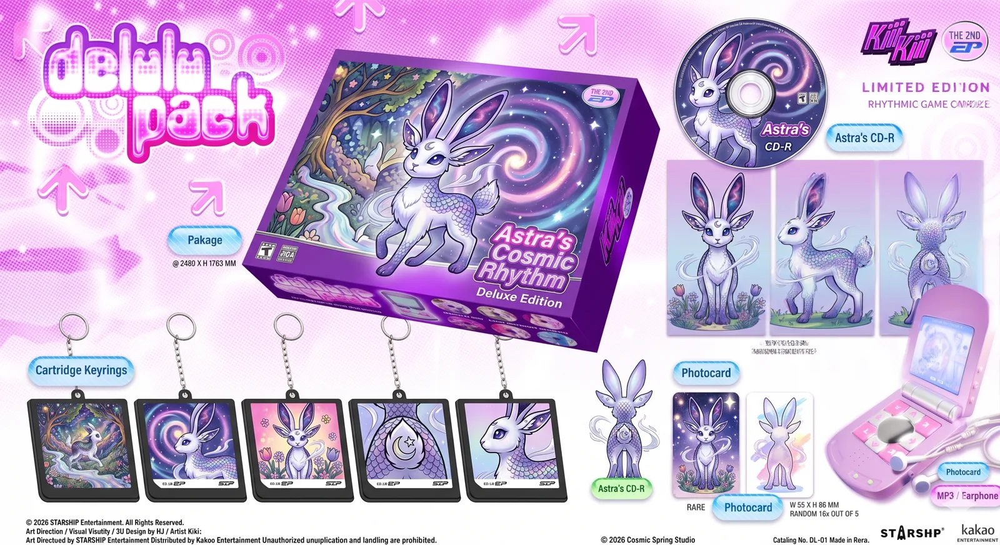
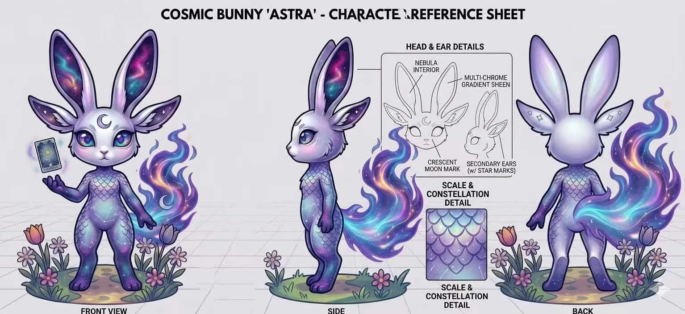
03 / KEY EXPLORATION
Key exploration
05 / FINAL OUTPUT
Final output
在当代都市文明的坚硬外壳下，灵魂对未知的向往，本质上是对情感寄托与精神自愈的渴求。月灵兔是一种"被遗忘的能量具象"——在不同文明的残篇中似乎能捕捉到流传已久的"月亮与兔子"的潜意识关联。它是连接自然、星辰与都市人破碎情感的唯一介质，跨越成为可以触碰、可以共鸣的"灵魂具象"。
More exploration / 11 more images
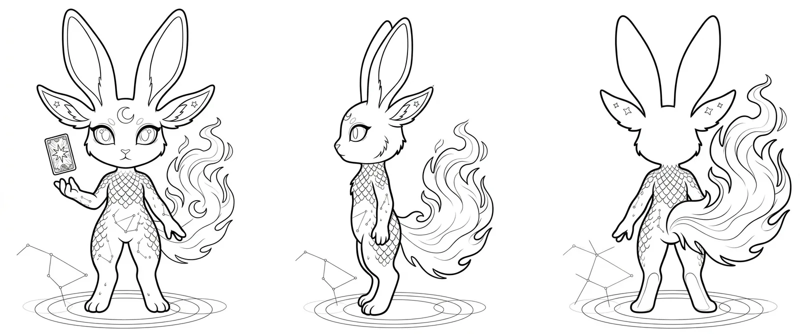
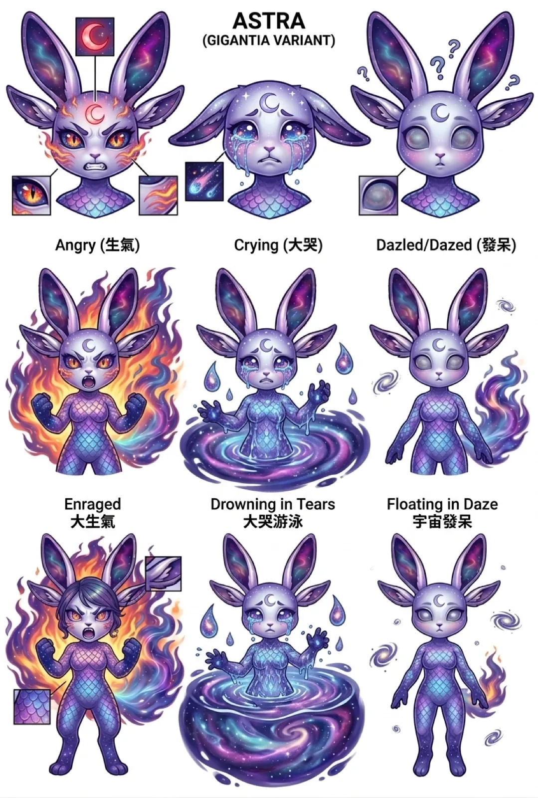
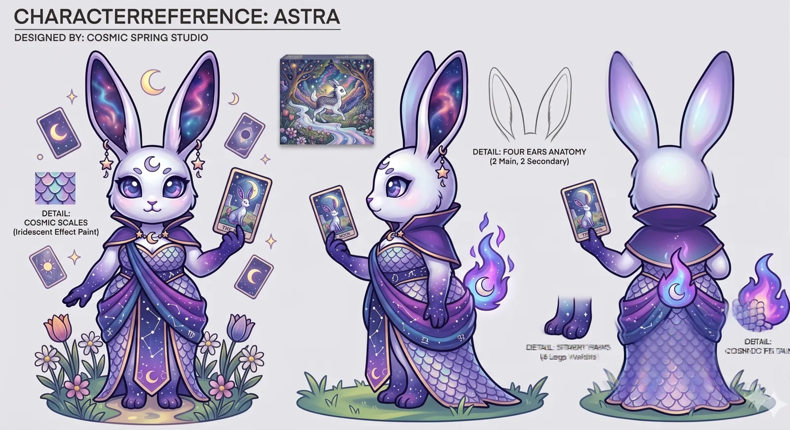
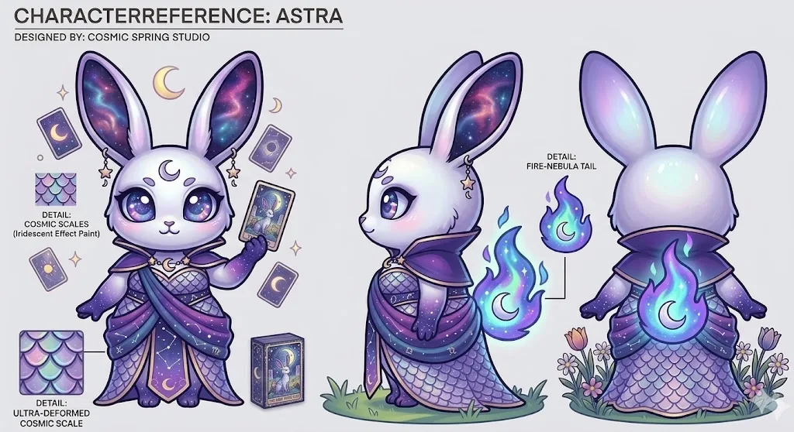
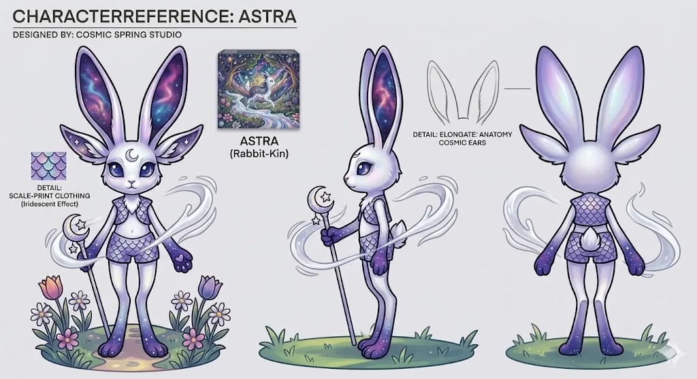
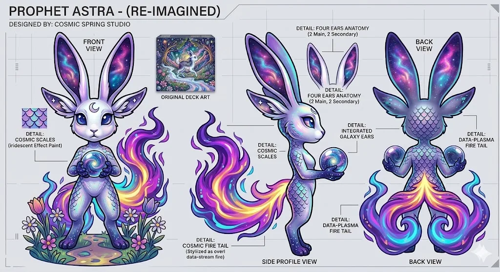
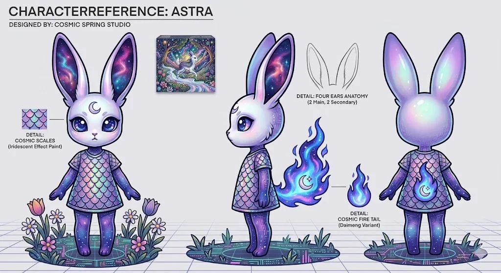
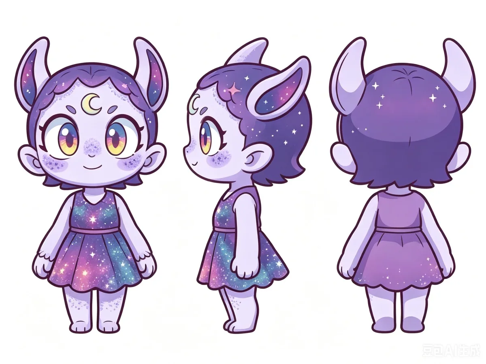
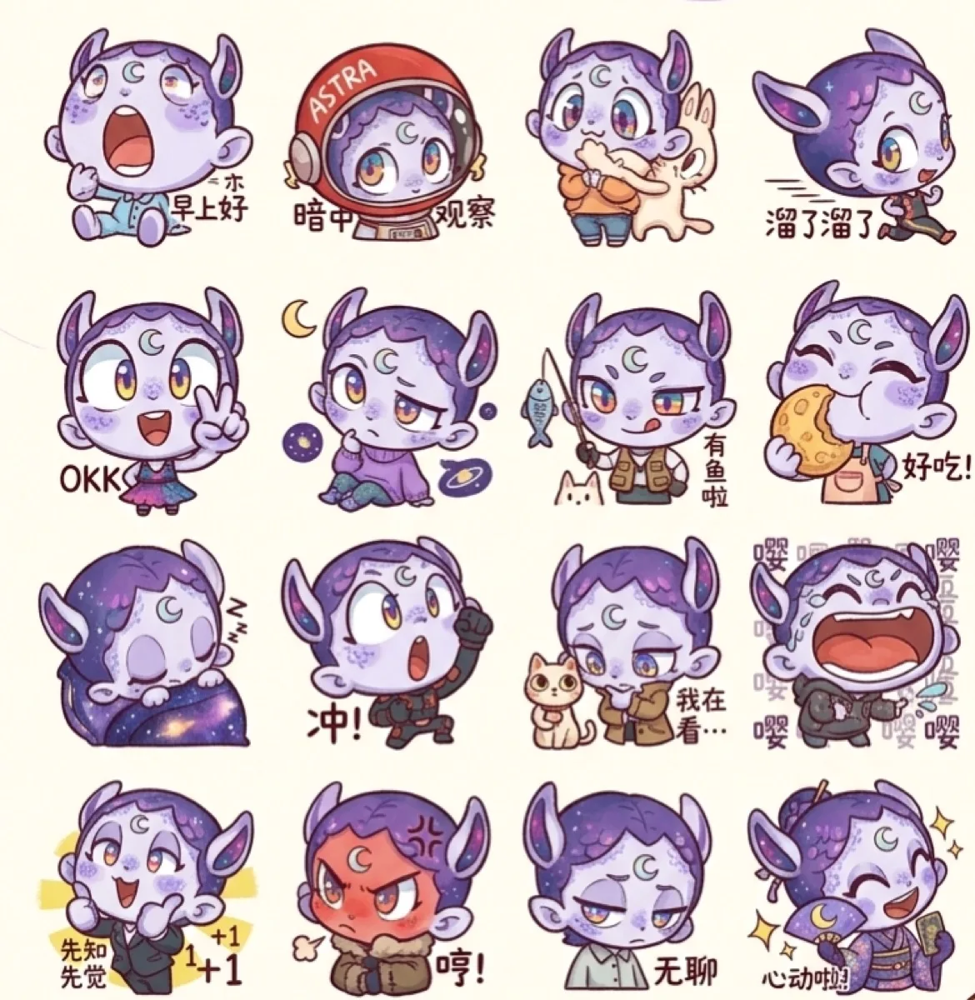
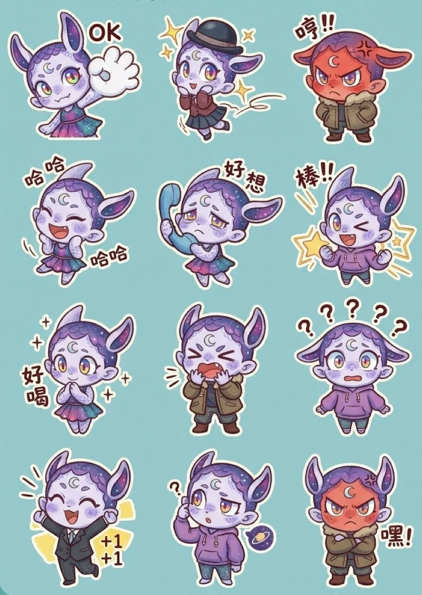
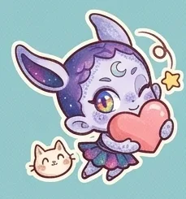
CONTINUE EXPLORING